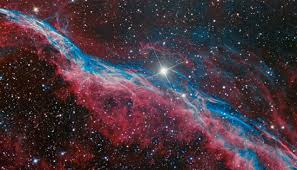
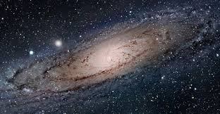
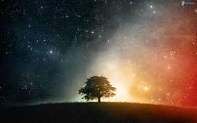
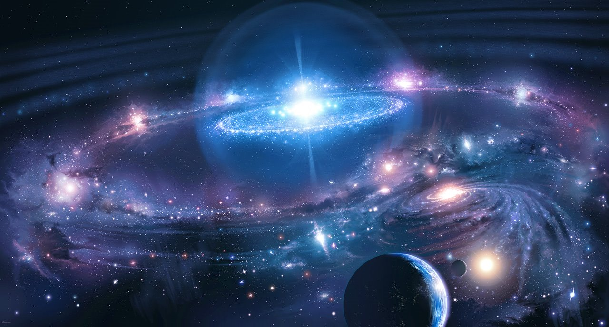

he Universe is commonly defined as the totality of existence.This includes planets, stars, galaxies, the contents of intergalactic space, the smallest subatomic particles, and all matter and energy, the majority of which are most likely in the form of dark matter and dark energy. The part of the Universe that we can see, referred to as the observable universe, is about 91 billion light-years (28×109 pc) in diameter at the present time.The size of the whole universe is not known and may be infinite.
All existing things; the totality of space, stars, planets and other form of matter and energy; the world.
There are many competing theories about the ultimate fate of the Universe. Physicists remain unsure about what, if anything, preceded the Big Bang.
Many refuse to speculate, doubting that any information from any such prior state could ever be accessible.
There are various multiverse hypotheses, in which some physicists have suggested that the Universe might be one among many universes that likewise exist

The word universe derives from the Old French word univers, which in turn derives from the Latin word universum
According to the prevailing scientific model of the Universe, known as the Big Bang,the Universe expanded from an extremely hot, dense phase called the Planck epoch, a brief period extending from time zero to approximately 10−43 seconds (the Planck time)
